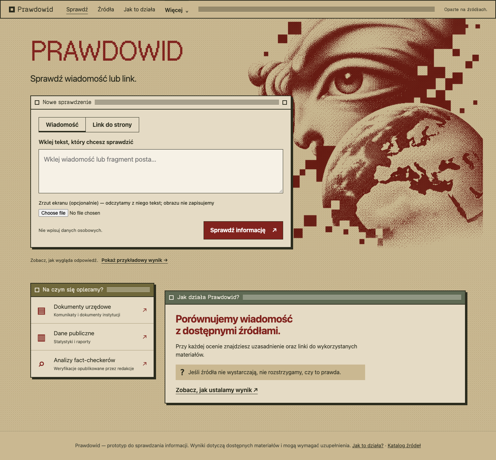
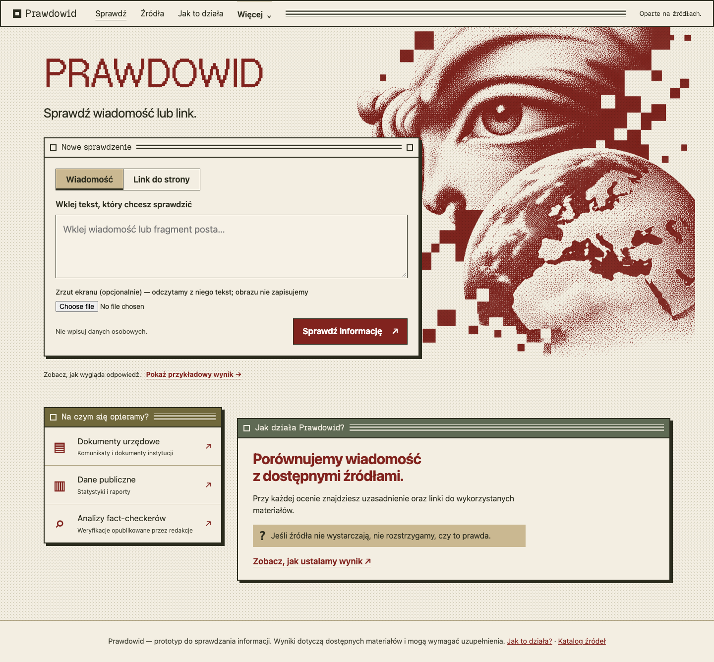
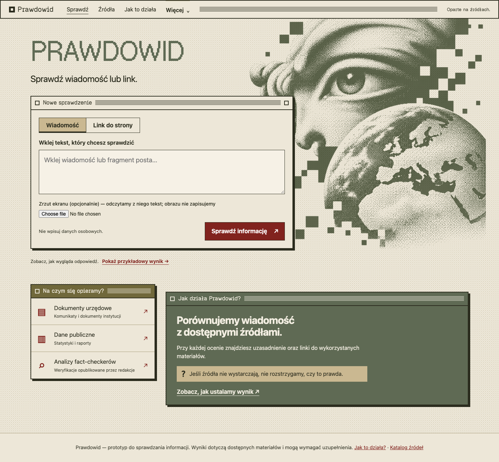

17 / Piasek i czerwień#cab891#70683b#81231e#5f6a54#2b2c1eNajwierniejszy kolorystyce referencji: piaskowe tło, ciemnoczerwona rycina, oliwkowe i szałwiowe belki. Ciemny tekst i ramki z palety.Pełny ekran ↗Telefon ↗Wynik ↗Wtyczka ↗
18 / Papier i czerwień#cab891#70683b#81231e#5f6a54#2b2c1eMój wybór: rozjaśniony papier daje oddech ilustracji. Piasek w zakładkach, oliwka w belkach, szałwia w objaśnieniach; czerwień prowadzi do działania.Pełny ekran ↗Telefon ↗Wynik ↗Wtyczka ↗
19 / Szałwia i czerwień#cab891#70683b#81231e#5f6a54#2b2c1eSpokojniejsza, szałwiowa rycina i czerwone przyciski. Zieleń w sekcji objaśnień, oliwkowe detale i piaskowe zakładki równoważą czerwień.Pełny ekran ↗Telefon ↗Wynik ↗Wtyczka ↗